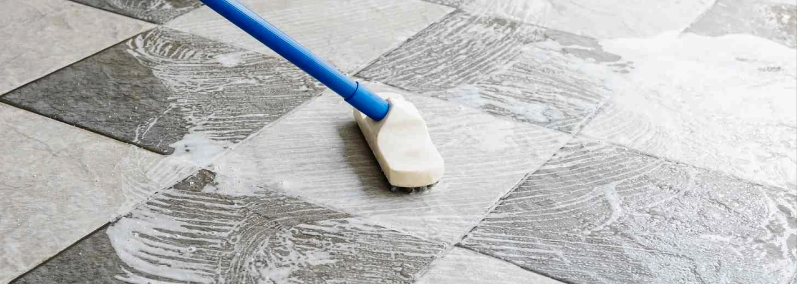

- Parquet : simple en méthode, mais zéro tolérance à l'eau et aux mouvements circulaires
- Carrelage : plus résistant, mais demande un vrai décapage en plusieurs étapes
- Règle d'or parquet : toujours dans le sens des lames, jamais en mouvements circulaires
- Règle d'or carrelage : travailler par zones pour ne pas se perdre dans le décapage
- Finition commune : détergent neutre en touche finale pour les deux
Pourquoi ces deux revêtements demandent des méthodes opposées
À première vue, un sol après rénovation, c'est un sol après rénovation. En réalité, parquet et carrelage réagissent à l'inverse l'un de l'autre face à la poussière de chantier.
| Critère | Parquet | Carrelage |
|---|---|---|
| Sensibilité à l'eau | Très sensible (à éviter) | Très résistant |
| Sensibilité aux rayures | Élevée (poussière qui raye) | Faible |
| Pénétration de la poussière | En surface | Couche incrustée dans le revêtement |
| Type de produit | Neutre uniquement | Décapant fort, puis neutre |
| Outils | Aspirateur, panosse microfibre | Brosse semi-dure, aspirateur à eau |
| Difficulté | Simple mais délicat | Complexe mais robuste |
| Temps moyen | Court, méthode rapide | Long, plusieurs passages |
Nettoyer un parquet après rénovation : la méthode pro
Le parquet est simple à nettoyer si on respecte deux principes : ne jamais le détremper, et toujours travailler dans le sens des lames. Une erreur sur l'un ou l'autre peut laisser des traces définitives.
Étape 1 : la première aspiration
- Utilisez un aspirateur avec embout doux pour parquet
- Passez lentement, dans le sens des lames (jamais perpendiculairement, jamais en circulaire)
- Insistez sur les joints entre les lames, où la poussière fine s'accumule
- Ne sautez aucune zone : la poussière restante rayera le bois lors de l'étape humide
Étape 2 : la solution de nettoyage
La règle d'or : le moins d'eau possible, jamais de produit acide ou agressif. La recette pro :
- 5 litres d'eau tiède (jamais chaude bouillante)
- 5 ml de détergent neutre (pH neutre, sans javel ni vinaigre)
- Une panosse équipée d'un pad microfibre
Étape 3 : le passage humide
- Essorez fortement la panosse : elle doit être à peine humide
- Passez dans le sens des lames, en lignes parallèles
- Ne repassez jamais deux fois au même endroit
- N'inondez jamais le bois, même quelques secondes
Étape 4 : séchage et contrôle
- Laissez le parquet sécher complètement avant d'y marcher
- Une fois sec, repassez l'aspirateur toujours lentement, sens des lames
- Inspectez à la lumière rasante pour vérifier l'absence de traces
Étape 5 : finition
Si le résultat n'est pas parfait, repassez une fois la même méthode (panosse à peine humide). Mais n'insistez jamais sur une tache rebelle : mieux vaut accepter une légère imperfection que d'abîmer le bois.

Nettoyer un carrelage après rénovation : la méthode pro
Le carrelage est l'inverse du parquet. Il supporte l'eau et les produits forts, mais il piège dans sa surface une fine couche de ciment et de poussière qu'une simple panosse ne retire jamais. Il faut un vrai décapage, en plusieurs étapes.
Étape 1 : retirer les résidus solides
Avant tout produit liquide, passez la pièce au crible :
- Retirer à la spatule les résidus de colle, de crépi, de peinture séchée
- Gratter délicatement pour ne pas rayer le carrelage (surtout les surfaces brillantes)
- Vérifier les angles, les plinthes et les seuils de porte
Étape 2 : aspiration en profondeur
- Aspirer toute la surface sans exception
- Passer plusieurs fois sur les zones les plus encrassées
- Ne sautez pas cette étape : un décapant sur une poussière non aspirée crée une boue qui s'incruste dans les joints
Étape 3 : humidifier le sol par zones
C'est l'astuce pro qui fait toute la différence : travailler par zones, pas la pièce entière d'un coup.
- Divisez la pièce mentalement en zones de 3 à 5 m²
- Humidifiez une seule zone à la fois, juste assez d'eau pour qu'elle soit étalée
- Évitez l'effet piscine : trop d'eau dilue le produit et réduit son efficacité
Étape 4 : application du décapant
- Versez le décapant directement sur la zone mouillée (respectez scrupuleusement le dosage du fabricant)
- Avec une brosse à poils semi-durs ou durs, frottez énergiquement
- Le produit moussera et réagira avec la couche de ciment
- Étalez bien partout, insistez sur les joints
Étape 5 : temps de pose et second frottage
- Laissez agir 5 minutes (jamais plus, sauf indication du fabricant)
- Remouillez la zone avec de l'eau propre
- Frottez à nouveau avec la brosse
Étape 6 : aspiration à eau
- Utilisez un aspirateur à eau pour retirer toute l'eau sale chargée de produit et de résidus
- Ne laissez aucune flaque sécher sur place (cela créerait un nouveau voile)
- Passez à la zone suivante et répétez les étapes 3 à 6
Étape 7 : finition
- Une fois toute la pièce traitée, faites un dernier passage à la panosse
- Utilisez un détergent neutre parfumé (citron ou autre)
- Cette touche finale rince les résidus de décapant et laisse le sol éclatant
Erreurs fréquentes à éviter
Sur parquet
- ❌ Utiliser de la vapeur : la chaleur et l'humidité combinées détruisent le vernis
- ❌ Frotter en mouvements circulaires : laisse des traces visibles à la lumière
- ❌ Verser de l'eau directement : risque de gondolage
- ❌ Utiliser vinaigre, javel ou ammoniaque : tous attaquent le bois
- ❌ Marcher pieds nus juste après : la poussière fine restante raye le vernis
Sur carrelage
- ❌ Sauter l'étape spatule : les résidus séchés ne partent pas au décapant
- ❌ Mauvais dosage du décapant : trop fort attaque les joints, trop faible n'agit pas
- ❌ Laisser poser plus longtemps que recommandé : peut ternir le carrelage
- ❌ Ne pas utiliser d'aspirateur à eau : la panosse redépose la saleté
- ❌ Oublier le rinçage final : laisse un film qui attire à nouveau la poussière
Quand faire appel à un professionnel
Vous pouvez nettoyer vous-même un parquet ou un carrelage après rénovation, à condition d'avoir le bon matériel : aspirateur adapté, panosse microfibre, aspirateur à eau, brosse semi-dure, décapant professionnel. Sans cet équipement, le résultat reste souvent décevant.
L'intervention d'un pro devient pertinente quand :
- La surface est grande (appartement ou maison entière)
- Vous emménagez rapidement et n'avez pas le temps des passages multiples
- Vous voulez la certitude du bon dosage de décapant selon votre type de carrelage
- Votre parquet est ancien, précieux ou récemment posé (risque d'erreur coûteux)
FAQ – Nettoyer parquet et carrelage après rénovation
Peut-on utiliser le même produit pour le parquet et le carrelage après rénovation ?
Non. Le parquet exige un détergent strictement neutre (pH neutre), utilisé très dilué et avec un minimum d'eau. Le carrelage demande au contraire un décapant puissant pour retirer la couche de ciment incrustée, suivi d'un détergent neutre en finition. Confondre les deux peut abîmer définitivement le parquet.
Pourquoi faut-il aspirer dans le sens des lames pour un parquet ?
Parce que la poussière fine s'accumule dans les rainures entre les lames. Aspirer dans le sens du bois permet à la brosse de pénétrer dans ces joints. Aspirer perpendiculairement ou en cercles laisse cette poussière en place, ce qui crée des micro-rayures dès qu'on remarche dessus.
Combien de temps faut-il pour nettoyer un carrelage après chantier ?
Pour une pièce de 20 m², comptez 2 à 3 heures en méthode pro (spatule, aspiration, décapage par zones, aspiration à eau, finition). Pour un appartement entier, prévoyez une journée complète. Le travail par zones évite de tout reprendre plusieurs fois.
Le décapage abîme-t-il le carrelage ?
Pas si le dosage et le temps de pose sont respectés. Un décapant trop concentré ou laissé trop longtemps peut ternir un carrelage mat, attaquer les joints ou éroder un revêtement poreux. Toujours tester sur une zone discrète et respecter scrupuleusement les indications du fabricant.
Peut-on utiliser de la vapeur pour nettoyer un parquet après rénovation ?
Non, jamais. La vapeur combine chaleur et humidité, deux ennemis du parquet. Elle peut décoller le vernis, faire gondoler le bois et créer des taches blanches irréversibles. Même les "nettoyeurs vapeur pour parquet" sont à éviter sur un sol récemment exposé à de la poussière de chantier.
En résumé
Parquet et carrelage demandent deux approches opposées après une rénovation. Le parquet, simple en méthode mais délicat dans les gestes, exige un sens strict (toujours dans les lames) et un minimum d'eau. Le carrelage, plus résistant, demande un vrai décapage par zones avec un aspirateur à eau. Dans les deux cas, le détergent neutre en finition est le secret d'un sol qui reste propre dans le temps.